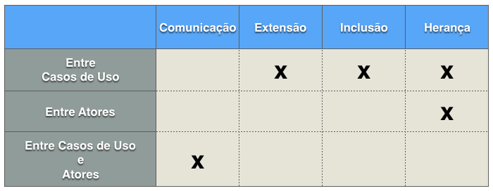

O diagrama de Casos de Uso auxilia no levantamento dos requisitos funcionais do sistema, descrevendo um conjunto de funcionalidades do sistema e suas interações com elementos externos e entre si.
Cenários: quando falamos de casos de uso, temos que ter em mente o conceito de cenários, que seriam instâncias de casos de uso.
↪ Um cenário pode ser compreendido como uma sequência de passos que descreve uma interação entre um usuário e o sistema.
Típico cenário de um diagrama de Casos de Uso
Em resumo, os diagramas de Casos de Uso:
● auxiliam na comunicação entre o cliente e os analistas.
● apresentam as principais funcionalidades do sistema com foco no cliente.
● descrevem cenários de interação entre as partes internas/externas de um sistema, com foco no usuário.
● é muito utilizado na fase de levantamento de requisitos.
Os principais elementos de um diagrama de casos de uso são:
● Atores: boneco com rótulo que representa um humano ou um sistema computacional.
Ator
● Caso de Uso: elipse com rótulo que representa uma funcionalidade do sistema, sendo que esta pode estar estruturada em outra(s). Um caso de uso pode ser concreto, quando é iniciado diretamente por um ator, ou abstrato, quando é uma extensão de um outro caso de uso. Além disso há casos de uso primários e secundários. O primeiro representa os objetivos dos atores, já o segundo são funcionalidades do sistema que precisam existir para que este funcione corretamente.
Caso de Uso
● Relacionamentos: auxiliam na descrição dos casos de uso, podendo ser: entre um ator e um caso de uso, entre atores e entre casos de uso.
Relacionamento
● Relacionamento de Comunicação ou Associação: representa a interação entre um ator e um caso de uso por meio de mensagens. É representado por uma linha sólida.
↪ Funcionalidade do ponto de vista do usuário.
● Relacionamento de Inclusão: utilizado quando um comportamento se repete em mais de um caso de uso. Por exemplo, num internet banking, um cliente que vai realizar um pagamento precisa se logar, assim como um cliente que vai visualizar o saldo também precisa se logar.
↪ Logar é essencial para pagar fatura e para ver saldo. Ou Logar é parte de pagar fatura e também é parte de ver saldo.
● Relacionamento de Extensão: utilizado quando se deseja modelar um relacionamento alternativo. Por exemplo, ao "cadastrar usuário" num sistema de forum, podemos "cadastrar um administrador" ou "cadastrar um moderador".
↪ Cadastrar administrador e Cadastrar moderador são extensões de cadastrar usuário. Eles não são essenciais, só contém eventos adicionais sob certas condições.
● Relacionamento de Herança: é um relacionamento entre atores, utilizado quando queremos representar uma especialização/generalização. Na figura a seguir, vendedor é especialização de pessoa (ou pessoa é generalização de vendedor), é representado por um alinha com um triângulo.
↪ Os casos de uso de pessoa são também casos de uso de vendedor. Vendedor tem seus próprios casos de uso.
Resumindo:
Como exemplo podemos imaginar uma loja on-line, onde podemos ter os cenários "comprar um produto", "cancelar compra", "acompanhar pedido", entre outros. Mas vamos nos concentrar no cenário "comprar produto", o qual podemos descrever sucintamente como:
↪ O cliente navega pelo catálogo e adiciona os itens desejados ao carrinho de compras. Quando o cliente desejar pagar, ele preenche os dados para entrega e da forma de pagamento, confirmando a compra no final. O sistema verifica o cartão de crédito, tenta passar a compra no cartão e confirma a venda com o envio de um e-mail.
Este é um de muitos cenários que podem ocorrer, tendo em vista que a verificação do cartão pode dar não autorizado, gerando um segundo cenário. Seu cliente pode ser um cliente regular, não necessitando preencher os dados de entrega ou mesmo do cartão, isso já seria um terceiro cenário.
Mas repare que a essência desses três cenários é que o usuário tem o mesmo objetivo: comprar um produto, nem sempre o usuário consegue, mas o objetivo permanece.
Os cenários devem se concentrar na intenção do ator, não na mecânica de como o ator utilizará o sistema. Por isso, detalhes da implementação da interface de usuário não devem ser descritas. Até mesmo porque a etapa de fazer digramas de casos de uso precede a de projetar a interface de usuário.
Veja que foram utilizados os casos de uso "informar endereço" e "preencher dados do cartão de crédito" como << extends >>, pois só haverá necessidade de informá-los se o cliente for novo, ou se ele quiser alterar uma dessas informações.
Repare também que os casos de uso "verificar dados do cartão de crédito" e "faturar compra" são relacionados como << include >>, pois sempre que for informado um novo cartão será necessário validar esse cartão e sempre que for finalizada uma compra, ela deve ser faturada.
Veja que temos dois atores no diagrama, o cliente e o sistema. Os casos de uso do sistema são abstratos, pois dependem do cliente interagir com seus casos de uso para que os do sistema possam ser acionados.